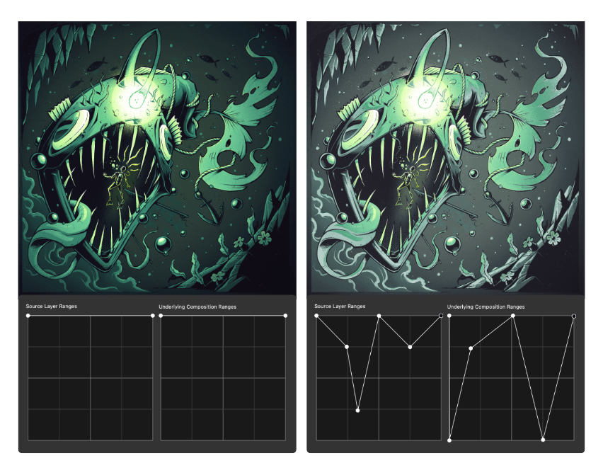
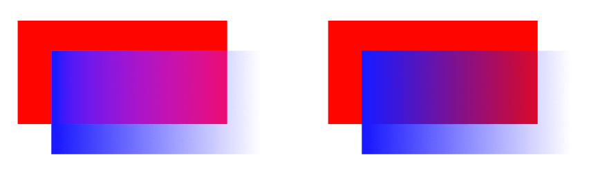
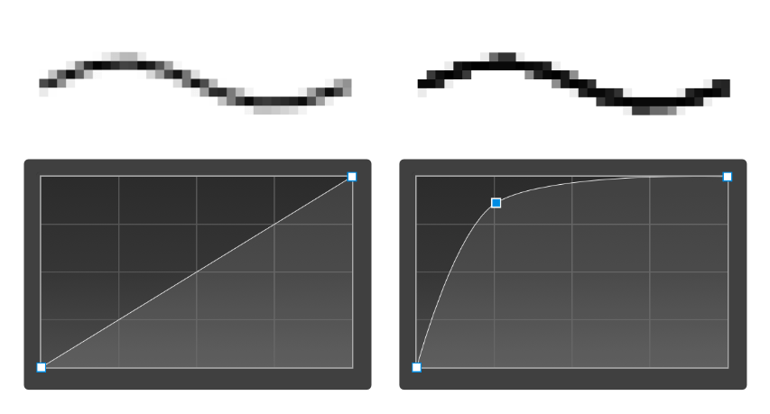

Blend ranges specify the range of colors on a current layer which are blended with the underlying layer(s).
Blend ranges allow you to specify how tonal values of a layer blend with the layer(s) below. You can set the range of the tonal values affected and can set the range to have any level of opacity (from opaque to transparent).

The blend range of the selected layer and the underlying layer(s) is controlled in the Blend Ranges dialog.
You can change the blend range for individual color channels within the dialog.
The Blend Ranges dialog allows you to adjust the blend gamma of the selected layer. This gives you the option of designing using a linear-RGB color space (1.0), regular sRGB-blending (2.2) or any gamma value up to 3.0. In other words, it gives you full control over how the tones of semi-transparent or antialiased edged objects interact with colors underneath.

Antialiasing is the reduction of the jagged appearance of lines on a pixel grid. Antialiasing is achieved by the addition of semi-transparent pixels along the line to smooth the transition from the line's edge to background objects. This area of transition is sometimes referred to as the antialiasing ramp or antialiasing coverage.
In the Blend Ranges dialog, you can adjust the antialiasing ramp (coverage) of the selected layer, as well as control how (and if) antialiasing is inherited or set independently of other layers. For improved workflow, child layers nested hierarchically in a parent layer can inherent the parent layer's antialiasing setting automatically but can be forced to apply antialiasing or ignore it.

The following settings are available in the Blend Ranges dialog:
The following settings can be adjusted for both the Source Layer Ranges and the Underlying Composition Ranges:
Do any of the following: